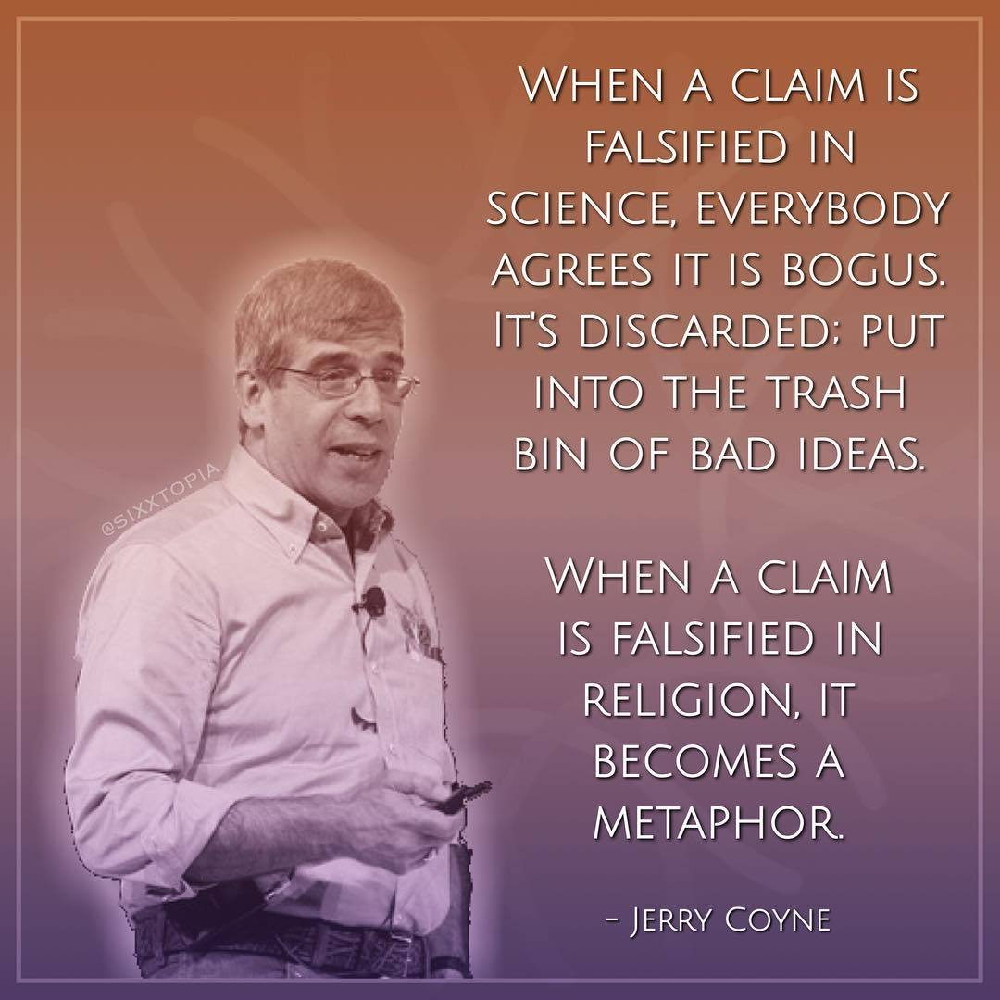

How Artificial Intelligence Paved my Way Out of Superstition
Introduction to my Superstitious Self
I grew up in a socialist Cuba, in a time when mainstream religions were officially viewed as poisonous byproducts of “decadent” western societies and to say it lightly, religious gatherings and celebrations were discouraged. Afro-Cuban religions, however, were allowed to exist and prosper in the shadows of informality. In that context, it is not unreasonable to assume that I became a skeptic adult. On top of that, I studied Physics at the university level, which I hope gave me some perks on critical thinking and the scientific method. Despite all that, I realized that I was at least a superstitious individual and remained as such up until recently. What do I mean by that? I sometimes thought about the possibility that a deity could exist and I actually could end up in hell when all was said and done. I believed that all things that happened to me had a meaning or purpose, and I just needed to be patient searching for patterns and with time all will make sense. Above all, the thing that bothered me the most was the idea of a non-stop divine supervision, an all-powerful entity watching and judging not only my actions but also my thoughts 24/7. I have never felt anything close to devotion or love for such a being, I mostly feared it.
In the Beginning, it was All About Political Comedy
Comedians such as John Oliver, Stephen Colbert, Jimmy Kimmel, Trevor Noah, and others were unknown to me before the 2016 US Presidential election. After that, it seems that their shows gained a lot of attention and they started to appear regularly in my YouTube feed (as I dug searching for answers on why America gave us Donald Trump as president). One of them, in particular, caught my attention: Bill Maher, he discusses politics with fearless humor, without running away from controversial issues or people.
And then, it Just Happened ...
It was on one of those Saturdays that I just sat in front of my smart TV, clicked on YouTube and started watching one of the Real Time with Bill Maher shows. I was unaware of when that show ended and the automatic reproduction feature played the next video, and then the next and those that followed based on my preferences (which YouTube suggested using A.I.). It was all fun and laughs as the videos continued to play older Maher’s shows, then the topic smoothly changed from politics to religion (I later learned that he was also a very well known atheist) and without me noticing it, I was watching George Carlin, Ricky Gervais and Penn Jillette. I knew him from the “Penn and Teller” show, so it was surprising to a certain point watching him giving a speech about religion in the next YouTube algorithmic twist. I remember that day watching David Silverman saying that talking about hell to children was child abuse, Aron Ra pointing out how the story of Noah’s arc is nonsense if we make simple logical inferences, and professor Jerry Coyne giving a dissertation on Why Evolution is True. Too much for a day when I was just fishing for a laugh on political jokes.
And I was Eager for More ...
If anyone could have asked me the day before my opinion on these topics I would probably have responded “I do not care too much about this” or “I have not given a thought to that recently” , but my answers would have changed dramatically just 24 hours later. I did not realize in those moments why the topic was so interesting to me, I just wanted to hear more about all of that. The next day my YouTube suggestions have expanded substantially in that direction. Without even searching for it, I saw some interesting material from former minister Dan Barker, Ayaan Hirsi Ali, Professor Richard Dawkins and Dr. Richard Carrier, who went as far as to argue that a historical Jesus did not exist. I felt a sort of an intellectual awakening, that made me remember my first encounter with topics such as Differential Calculus or Quantum Mechanics.
Down to the Rabbit Hole
Less than 48 hours after my accidental encounter has passed and it became clear that the topic reason vs faith has caught my attention. The suggestions on my YouTube feed kept expanding by featuring new names: Daniel Dennet, Sam Harris, Lawrence M. Krauss, Michael Shermer, Matt Dillahunty, Sean Carroll, and Christopher Hitchens, among others. In the few weeks that followed, I watched near a hundred videos on the topic. At that point I could not find a trace of the fear that had tormented me not so long ago, but my scientific educated mind started whispering to my ear “How about confirmation bias?” I knew I had to listen to what the other side had to say.
Debates and Interesting Shows
I have to confess that it is painfully difficult for me to watch videos featuring apologists for more than a few minutes, I just cannot find the proper mindset (I suppose). For that reason, I chose a more entertaining way to accomplish my goal: I went for atheist versus theist debates. Again, the YouTube topic ran for weeks, expanding my horizons each time. After watching dozens out of the hundreds available online, I did not find many theists’ compelling arguments. In fact, they were just a few that kept repeating themselves through different orators. I expected more from 2000 years of theology and what I found was theists clutching at the last straw on every argument to explain why they believe and why it is reasonable for the rest of us to do so. Of course, no one has to take my word for it, the videos are free online so anyone can go watching them to form their own opinion.
Here are Three of my Favorites:
- Dr. Sean Carroll vs. Dr. William Lane Craig: God & Cosmology
- Dr. Sam Harris vs. Rabbi David Wolpe: Does God Exists?
- Ayaan Hirsi Ali and Douglas Murray vs. Zeba Khan and Maajid Nawaz: Islam is a Religion of Peace.
Online Shows
Another YouTube's A.I. suggestion turned out to be priceless to me, an online show called The Atheist Experience. This is an initiative of the Atheist Community of Austin (ACA) broadcasting weekly since 2005. Usually, it features two hosts (most of the time former believers), and theists call-in (live) to the show from within the US or from abroad, to discuss a topic of their preference. In many cases the hosts confront the callers with their own choices, (a common question is “What do you believe and why?”) making them think harder before answering. Sometimes smart people call multiple times and the discussions become interesting. Their audience is mostly young, but regardless of age, people passionate in their beliefs about the existence of God should give this show a shot. Encouraged by the success of The Atheist Experience, (and probably following the complaints of callers on how difficult it was to get their calls through) ACA launched a second show a few years ago: Talk Heathen. With the same format, now they have two shows airing a few hours apart on Sundays. There are a plethora of videos from the previous shows available online, like this vintage one from The Atheist Experience.
Some Final Thoughts (for now anyway)
In the age of the Internet, we can find a great deal of content on virtually any subject, but we have to be aware of the subject in the first place, or get lucky as I assume I was on this particular case. I held a wrong mindset for too long in my life, not worrying at all about organized religion, but enduring the undermining thoughts that usually believers and churchgoers have.
I cannot describe in words what a relief I felt when I realized that all my worries were for the wrong reasons. Years later, I can safely say that the A.I.-based algorithm of YouTube’s video suggestions put me on the right track to address a problem (even if I was not fully aware of it). Since then, I have reached a level of peace of mind I do not remember that I have ever had.
Now, I can also put myself on the shoes of those good people out there feeling the same fear I felt, struggling to bear an unnecessary burden on an already difficult world. I feel for them but I also think at the same time that if they have an open mind, it only takes a casual encounter with one or two YouTube videos to start their revolution of thoughts.